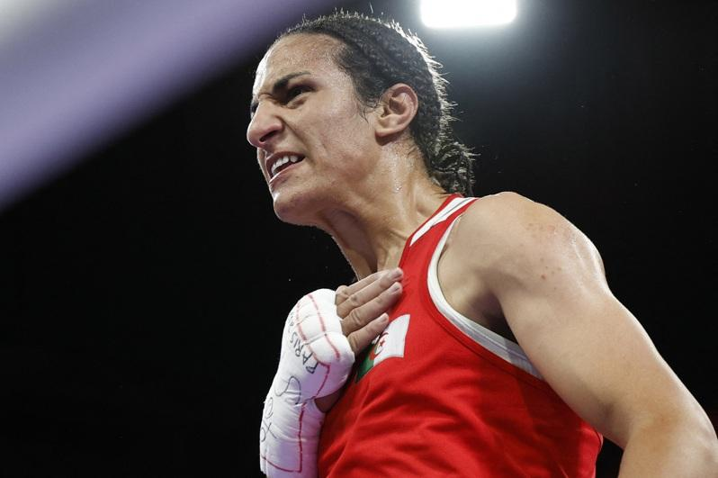

参加巴黎奥运的阿尔及利亚女子拳击选手哈利夫（Imane Khelif）说，她近期因性别误解而遭仇恨审视「有伤人性尊严」，呼吁停止霸凌运动员的行为。
哈利夫以阿拉伯语说：「我要向世人传达：坚守奥林匹克原则和奥林匹克宪章，不要霸凌所有运动员，因为这会造成影响，很严重的影响…这会毁了一些人，扼杀一些人的思想、精神和心智。这会分化人们。因此我要求他们不要霸凌别人。」
哈利夫与台湾女子拳击手林郁婷在赛场的胜利，成为巴黎奥运最受瞩目的议题之一。两人已笃定赢得奖牌，但与此同时，网络上充斥对她们性别种种缺乏事实根据的说法，把她们卷入一场关于运动赛事中的性别认同和规范的争论。
25岁的哈利夫坦承，在远离家乡到巴黎参加这场她运动员生涯最重要赛事之际，还要承受这次风波，让她备感压力和痛苦。
她说：「我每周有两天会联系家人。希望他们没有太受影响。他们很担心我。如果一切顺利，这场危机将止于一面金牌，这将是最好的回应。」
争议始于国际拳击总会（IBA）声称哈利夫与林郁婷未通过去年世界锦标赛女子赛事的资格测试。测试内容未经具体说明，且国际拳击总会已被永久禁止参与奥运。
被问到是否接受过禁药以外的其他测试时，哈利夫不愿回答，仅说她不想谈。
哈利夫感谢国际奥会（IOC）及主席巴赫（Thomas Bach）在国际拳总因她参加巴黎奥运而掀起轩然大波时坚决支持她，「我知道奥会给了我公道，我很高兴有此补救行动，因为它反映了事实」。
本届奥运赛事期间哈利夫获得很多支持，她进入赛场时有许多人欢呼，群众挥舞阿尔及利亚国旗、高喊她的名字。她将于6日在罗兰盖洛斯（Roland Garros）体育馆的女子66公斤级4强战出赛，对手是来自泰国的苏万纳彭（Janjaem Suwannapheng），获胜就能打进9日的金牌战。
哈利夫再次表明，不会让闲言闲语或指控妨碍她争夺阿尔及利亚第一面奥运女子拳击项目金牌。她说：「我不在乎任何人的意见。我来这里是为了夺牌，我来比赛是为了夺牌。我一定会参赛以求进步、变得更强，如果一切顺利，我会像其他每位运动员一样进步。」
哈利夫虽然知道全世界都在讨论她的事，但觉得有点事不关己，「老实说，我不看社群媒体…我们的心理卫生团队不让我们看社群媒体，尤其是在奥运期间，不管是我还是其他运动员。我是来比赛和取得佳绩的」。
哈利夫8月1日在奥运女子拳击66公斤级预赛时，仅46秒就打得意大利女拳手卡里妮（Angela Carini）弃权，卡里妮在场上跪地落泪的画面引发关于哈利夫和台湾选手林郁婷的性别风波与讨论，意大利总理梅洛尼、美国前总统川普都通过社媒贴文蹚浑水。卡里妮事后接受自家义媒采访时公开向哈利夫道歉。
哈利夫昨天战胜匈牙利选手哈默里（Luca Anna Hamori）后，走到擂台中央向粉丝挥手并跪下来，笑着笑着便落泪。
她受访时说：「我控制不住情绪…因为在媒体疯狂报导和赢得胜利后，我一边觉得开心，一边也很受影响，因为老实说，经历这些一点也不容易。这种事有伤人性尊严。」